Puedes entrar en este santuario desde que llegas a la región de la torre de Eldin. Está localizado entre la torre de Akkala y la torre de Eldin, justo encima del Lago Bachin.
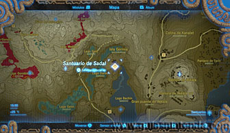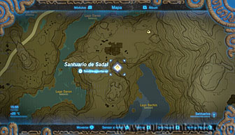
Todos los obstáculos que te vas a ir encontrando aquí dentro se pueden solucionar con fuego, aunque también podrás usar las bombas si lo prefieres o si no tienes flechas en tu poder. Quema o destruye las hojas y las cajas que hay detrás de ellas en la primera sala.
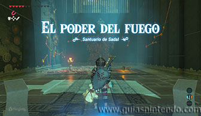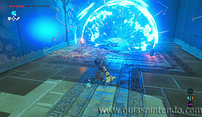
Después derrota al miniguardián que te espera, una simple flecha es todo lo que necesitas.
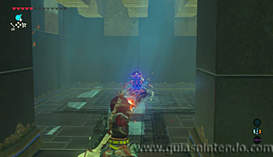
Ahora tendrás que quemar más hojas o de nuevo usar las bombas para abrir el camino.
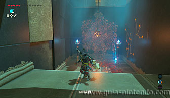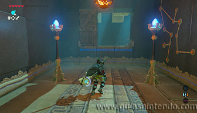
Así llegarás a la sala final, ahora tienes que pulsar un interruptor que está en el suelo, tras unas rejas, para abrir la puerta de salida. La mejor manera de hacerlo es quemar con flechas de fuego las hojas de la pared y el suelo.
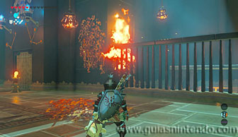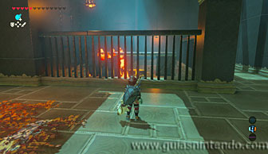
Si de nuevo te faltaran flechas siempre podrías usar las bombas.
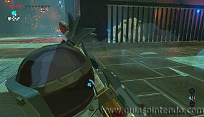
Para encontrar el cofre mira en la pared enfrente del interruptor y lo verás arriba sobre una plataforma de madera. De nuevo usa flechas de fuego o corta la cuerda de una lámpara para que caiga y las queme ella. El cofre contiene un Arco de caballero.
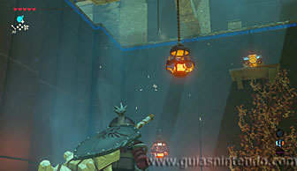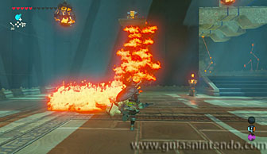
Cuando llegues al altar podrás examinarlo para obtener un símbolo de valía.
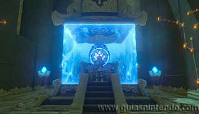